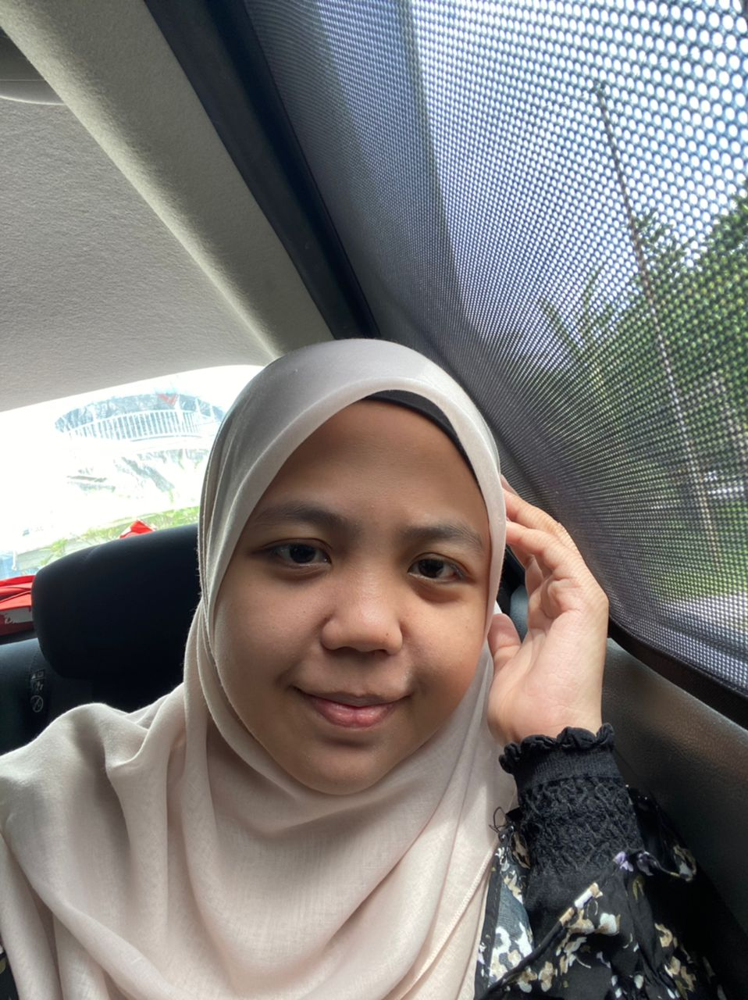
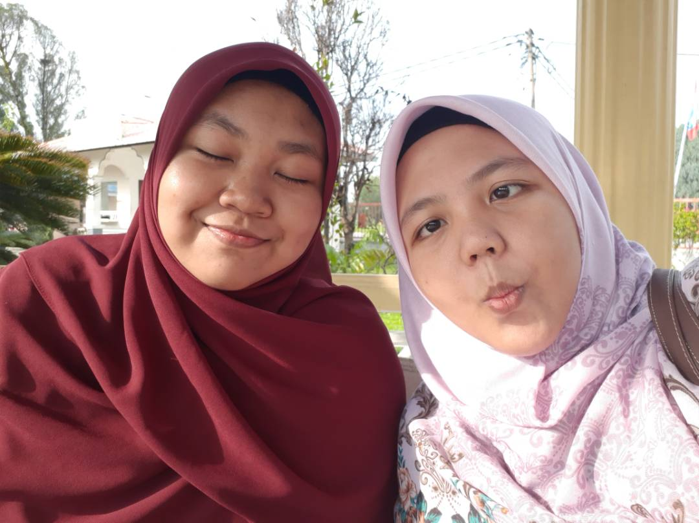
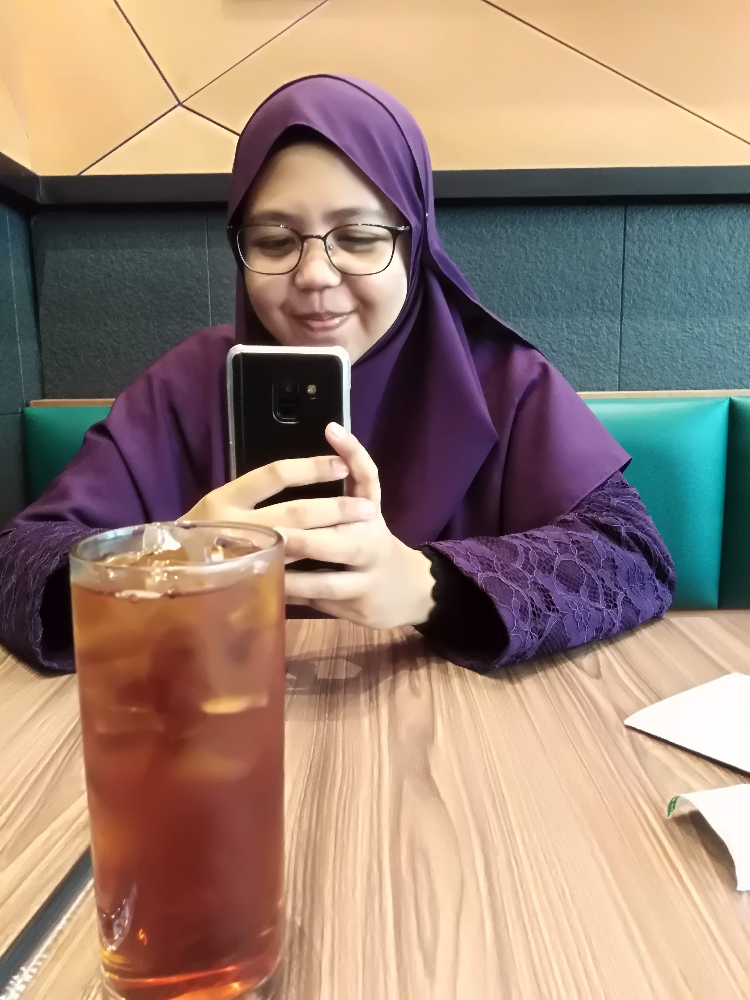
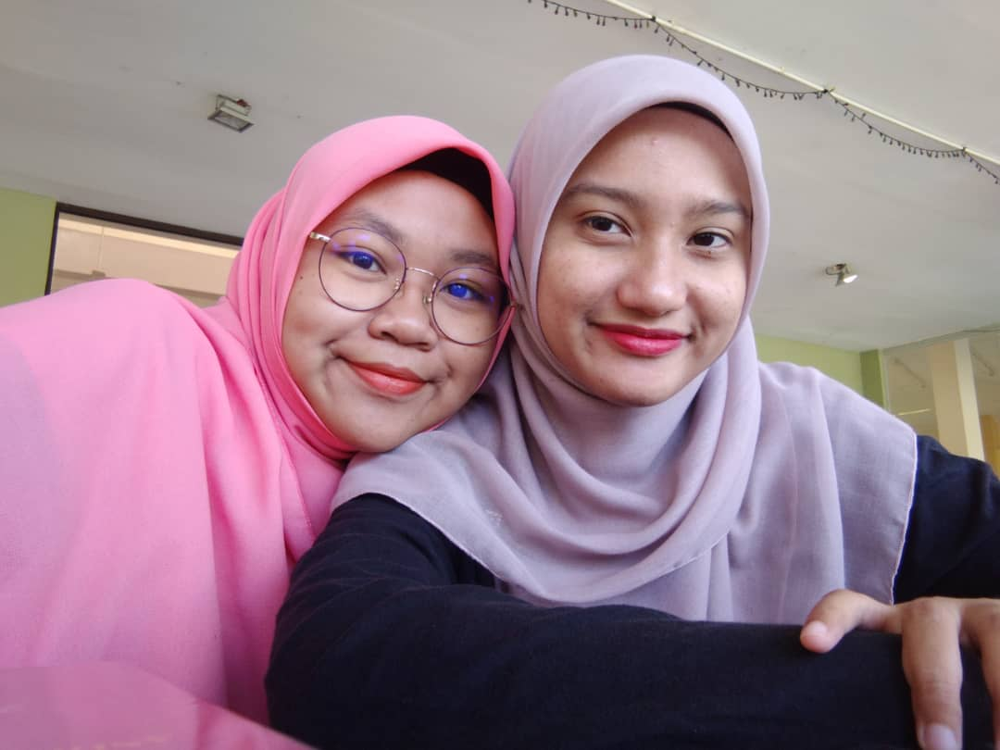
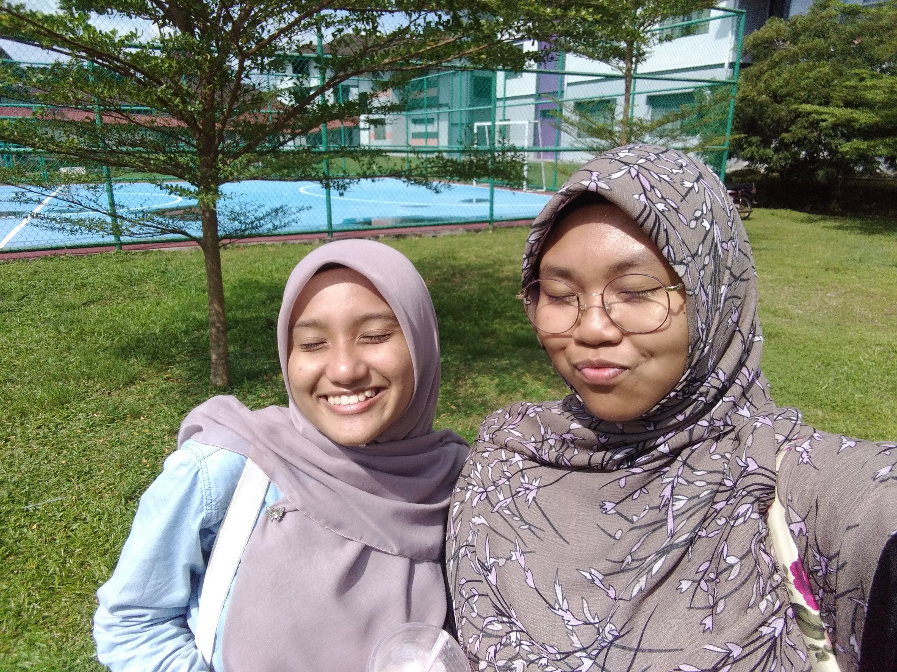

My partner in crime
As a normal human being, I also has best friends who make me feels understood, bear with my weird personality without question anything about it, accept me the way I am, and more than happy to change together to be a better person. I am not saying that my other friends are not like this, but when you have best friends, you will feels like every single thing they do for you are special, because there is unique connections to it that not everyone can feels it. So, it is good to have best friend as your day will be brighter even only with their companion!
  
The person in these photos is Zulaikha. Okay, there is an interesting story about her. We have known each others since we were in kindergarten, probably as our mothers teach at the same school, which is KISAS. I literally have no memories either we have played together when we were younger. But I do remembered that we studied together for UPSR at girl's hostel. Later on, we did attended to the same school from Form 1 until Form 3 but we did not really close to each other until we both moved to KISAS in 2016. I just found it so funny because we never hangout together before that, and be inseparable in KISAS. We often mistaken as twins because people said we really looks alike. As we grew fond to each others, I found that she is such a sweet girl, fragile but strong, high self-motivation and kind-hearted. As we both had title as teacher's daughters at that time, there were situations where we felt like it was not supposed to happen. Thus, we shared the same feelings, and same thoughts which makes us relying to each others unintentionally. Nonetheless, I really am grateful for her presence during those time and the fondness built allow us to still being a good friend to each others until now. We have not see each other for almost 3 years now! I should take a lot of pictures together with her because I just realized that I do not have only few pictures with her in my gallery.
 
Starting new life journey in diploma with no experience and ill thoughts, it was actually a quite challenging. I was in turbulence and having trouble adapting with new environment, far away from home for the first time. Luckily I met nice people there and they become good friends to me. Among them, Aishah randomly helps me overcome my insecurities as she approached me first eventhough it took awhile for her to do that maybe, because I look unfriendly at first glance. Since then, we became close. Aishah naturally get along with others to, it might be because she looks soft.
Fun fact! Our birthday dates are just a day apart. Mine is on 11th April and her birthday is on 13th April. We also have almost the same personality, weird yet still have strong traits and only certain people can see it. Interesting, right? What I love about her is that she loves heart-to-heart talk, we will have slow serious talk while laying down and at some point we will start talking about random things. Aishah is one of human that I know who is genuine, she is humble, straightforward, and she will be helping people without intention because that is her true personality. She does not even bother spending her time listening to my babbling and even my problems. I was in awe and saddened when I knew she got into another campus for degree eventhough we are in the same course. I was like "Oh, now I don't have my best friend to rant about everything while walking to the classes".
Eventhough it has been only 3 years knowing her, I admit that I really fond to her. As now we are not in the same place, neither our home nor our campus, we are still spamming each other almost everyday and sometimes it does not need any particular issues to talk to. We just spamming little things like how was our day, what did we do, and other random things. Oh, she also love a korean idol group, ATEEZ and since I started loving the same group too not long after her, we will rant about them and their songs, news and more. Besides, I can comfortably open about my personal problems only with her as she will not judge anything about it and always gives supports on whatever ways I handle my problems. I think the only person that I share most of my stories and personal problems is with her. I do have faith on her and I hope she can trust me the way I trust her too, eventhough I know she already has. Also, it is a vice versa with her, if she telling her stories, I do not feel burden with it and I will respond to them diligently. Nevertheless, I do think that these things only can happen when both of us really enjoy each other presences and have balance amount of gives and takes. Otherwise, it is hard even to say hello.